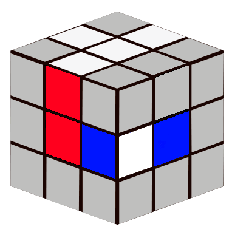
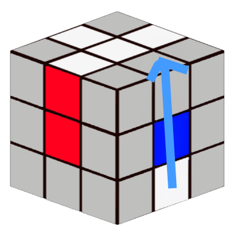

1. Weißes Kreuz erstellen
Beginne mit dem weißen Kreuz
Positioniere die Kantensteine so, dass sie mit den Mittelsteinen der Seitenfarben übereinstimmen. Nutze folgende Algorithmen:
Edit
Wähle eine Farbe:
Algorithmus: 1 = U, t;


Algorithmus: 1

2. Zweite Ebene lösen (Kanten ohne Gelb einsetzen)
Wann wird dieser Algorithmus verwendet?
Dieser Algorithmus wird verwendet, um eine Kante ohne Gelb von der oberen Ebene in die zweite Ebene einzusetzen. Ziel ist es, die mittlere Ebene vollständig zu füllen.
Vorgehen:
1. Suche oben eine Kante ohne Gelb.
2. Richte die Vorderseite (Front) so aus, dass die Farbe der Kante mit
dem Mittelstein übereinstimmt.
3. Wenn die Zielposition rechts ist, nutze den rechten Algorithmus:
U R U' R' U' F' U F
4. Wenn die Zielposition links ist, nutze den linken Algorithmus:
U' L' U L U F U' F'
Algorithmus (nach rechts):
U R U' R' U' F' U F
Bewegung der Kante – Bildabfolge:
Start
U
R
U'
R'
U'
F'
U
F
Kante richtig eingesetzt
3. Mittlere Ebene lösen
Kantensteine korrekt platzieren. Nutze: U R U' R' U' F' U F.
4. Gelbes Kreuz bilden
Algorithmus: F R U R' U' F' zum Erstellen des gelben Kreuzes.
5. Letzte Ebene permutieren
Gelbe Ecken/Kanten anpassen. Ecken: R U R' U R U2 R' Kanten: U R U' L' U R' U' L